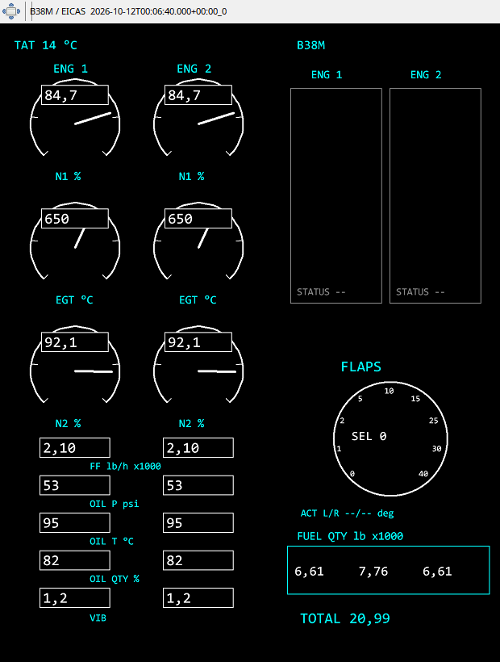

EICAS jest dedykowany typowi B38M. N1, EGT i N2 przedstawiono jako analogowe ³uki z wartoœciami liczbowymi. Ni¿ej znajduj¹ siê przep³yw paliwa, olej i wibracje, a obok konfiguracja klap oraz paliwo w zbiornikach i suma. Czytaj jednostki: iloœæ paliwa w tysi¹cach kg nie jest t¹ sam¹ skal¹ co przep³yw kg/h.
Kontrolki zaworów, ciœnienia oleju i stanów silnika wynikaj¹ z zapisanych danych. Brak ostrze¿enia w dawnym pliku nie potwierdza jego nieobecnoœci w kokpicie. Panel nie jest przeznaczony jako docelowy EICAS dla B736–B739. Mo¿na od³¹czyæ go osobno lub zadokowaæ obok PFD w jednym oknie, zachowuj¹c wspólny kursor czasu.
